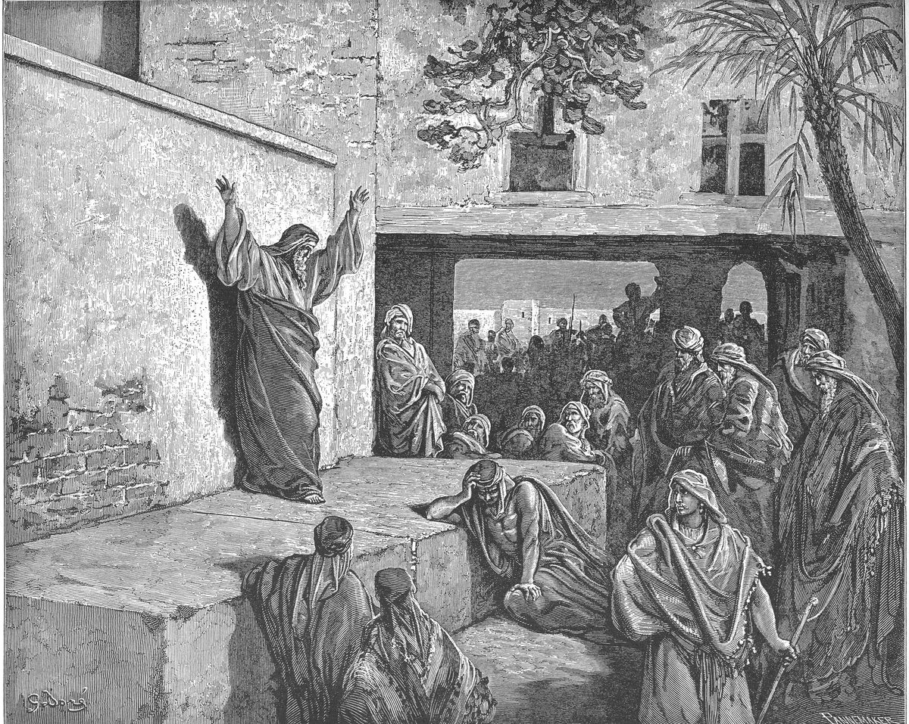

Micah 6 — The Mister Translation

Plate 139 of Gustave Doré’s illustrated Bible, signed by Doré at the lower left and by the engraver Pannemaker at the lower right. The scene is not tied to one verse; it shows the prophet as Micah 6 has him, pleading a case in public while his hearers sit or stand unmoved.

Translator's Notes — verse by verse
A dispute before the mountains. “Rise, plead the dispute before the mountains, and let the hills hear your voice”: the verb and the noun are both riv, the ordinary word for two parties with a case against each other, and the prophets’ word for God’s own case against his people. Riv et-heharim can mean pleading “before” the mountains or “with” them, and v2 settles it: the mountains are the ones who hear, the jury, as heaven and earth are summoned at the opening of Isaiah 1. The ASV has “Arise, contend thou before the mountains”; the NWT 1984 “conduct a legal case with the mountains”; the Douay “contend thou in judgment against the mountains”; the NIV makes the prophet God’s advocate, “plead my case before the mountains”.
The enduring ones. “Hear, O mountains, the dispute of Jehovah, and you enduring ones, foundations of the earth”: ha-etanim is from eitan, what lasts and does not fail, the word of the “ever-running water” of Deuteronomy 21:4. The witnesses are chosen because they were there before Israel and will be there after. “With Israel he will argue it out” is yitvakkach, from yakach, the verb of “let us settle it in court” (Isaiah 1:18). The ASV has “and ye enduring foundations of the earth”; the NWT 1984 “also YOU durable objects”; the KJV “and ye strong foundations of the earth”. The Greek has “valleys”, pharanges, beside the hills.
Testify against me. “My people, what have I done to you, and how have I wearied you? Testify against me!”: the plaintiff turns and offers himself as the accused. Aneh vi, “testify against me”, is the witness’s idiom, to answer against someone, the verb of “You shall not answer against your neighbour as a false witness” (Exodus 20:16, now on these pages). Naomi used the same two words of God, “Jehovah has testified against me” (Ruth 1:21); here God invites the testimony. The ASV has “and wherein have I wearied thee? testify against me”; the NIV “How have I burdened you? Answer me”; the Douay “or in what have I molested thee?”
Moses, Aaron, and Miriam. “For I brought you up from the land of Egypt, and from the house of slaves I redeemed you”: “the house of slaves” is the phrase of the Ten Words, “who brought you out of the land of Egypt, out of a house of slaves” (Exodus 20:2), and padah, “redeemed”, is the verb of Deuteronomy 7:8. Then three names: Moses, Aaron, and Miriam, “Miriam the prophetess” of Exodus 15:20, sent before Israel as one of its three leaders. The NWT 1984 has “from the house of slaves I redeemed you”; the ASV “out of the house of bondage”; the NIV ranks them, “I sent Moses to lead you, also Aaron and Miriam”; the Douay, from the Latin, calls her “Mary”.
From Shittim to Gilgal. “My people, remember what Balak king of Moab devised, and what Balaam son of Beor answered him”: what Balak devised was a curse, and what Balaam answered was “How shall I hex whom God has not hexed? And how shall I denounce whom Jehovah has not denounced?” (Numbers 23:8, now on these pages). Ya’ats, “devised”, is the verb of counsel, the word Balaam uses when he offers Balak “let me advise you” (Numbers 24:14). “From Shittim to Gilgal” has no verb: it is a road, from the camp where “Israel settled in Shittim” and fell into sin with Moab (Numbers 25:1), across the Jordan, to Gilgal, where Jehovah said “Today I have rolled away the reproach of Egypt from off you” (Joshua 5:9). The ASV supplies a verb, “remember from Shittim unto Gilgal”; the NIV “Remember your journey from Shittim to Gilgal”. The Greek translates the place name as “from the reeds”. Tsidqot YHVH, “the righteous acts of Jehovah”, are what Samuel lays out when he too takes Israel to court, “let me plead with you before Jehovah concerning all the righteous acts of Jehovah” (1 Samuel 12:7). The phrase stands in four verses of the Hebrew Bible: here, 1 Samuel 12:7, the Song of Deborah (Judges 5:11) and Psalm 103:6.
The bidding goes up. “With what shall I come before Jehovah, and bow myself to God on high? Shall I come before him with burnt offerings, with calves a year old?”: the defendant answers with a price list, and each offer is larger than the last. A calf a year old is a burnt offering the law prescribes, “a calf and a lamb, both a year old, without blemish, for a burnt-offering” (Leviticus 9:3). Then “thousands of rams”, then “ten thousands of rivers of oil”, which no altar ever received, and then the last bid, “Shall I give my firstborn for my revolt, the fruit of my belly for the sin of my soul?” The law had already named that offering and forbidden it: “You shall not give any of your offspring to make it pass to Molech” (Leviticus 18:21). Yirtseh, “will he be pleased”, is from the root of ratson, goodwill, and pesha is “revolt”, not a slip but a rebellion. The NWT 1984 has “Shall I give my firstborn son for my revolt”; the ASV “shall I give my first-born for my transgression”; the Douay “with many thousands of fat he goats”.
Sacrifice and listening. The question had been asked before: “Has Jehovah as much delight in burnt offerings and sacrifices as in listening to the voice of Jehovah?” (1 Samuel 15:22, now on these pages), and Isaiah’s God had said, “I have had my fill of burnt offerings of rams” (Isaiah 1:11). Micah’s list climbs all the way to the firstborn before the answer comes.
Told, and required. “He has told you, O human, what is good”: higgid, “has told”, is in the past; the answer is not new. Adam is the human being in general, not a man of Israel only. “And what does Jehovah require of you”: doresh is from darash, to seek, inquire after, require an account of. It is not the verb of the sentence this one is most often quoted beside, “what is Jehovah your God asking of you?” (Deuteronomy 10:12, now on these pages), which has sho’el, asks; Deuteronomy asks, Micah requires. The ASV has “and what doth Jehovah require of thee”; the NWT 1984 “what is Jehovah asking back from you”.
Justice and kindness. “But to do justice, and to love kindness”: mishpat (see mishpat) is justice as something done, a verdict given or a wrong put right, as in “seek justice; set the oppressed right” (Isaiah 1:17). Ahavat chesed is “to love kindness”: chesed is loyal kindness, the word paired with faithfulness in “Let not kindness and faithfulness forsake you” (Proverbs 3:3). It is not only to do it but to love it. The ASV and the NWT 1984 both have “and to love kindness”; the KJV and the NIV have “and to love mercy”; the TLB spreads it into a list, “to be fair, just, merciful”.
To walk modestly. “And to walk modestly with your God”: hatsnea lekhet. The verb tsana is rare: the root stands in two verses of the Hebrew Bible, here and in “with the modest is wisdom” (Proverbs 11:2). It is not the ordinary word for humble, anav, and its sense leans toward the quiet and careful: a walk that does not put itself forward. The NWT 1984 has “and to be modest in walking with your God”; the ASV “and to walk humbly with thy God”; the Geneva “and to humble thyself, to walk with thy God”; the Douay “and to walk solicitous with thy God”. The Greek has “to be ready to walk with the Lord your God”.
The three together. The verse names three things, two of them done toward people and one toward God, and none of them is on the price list of vv6–7. Jesus names a related three as the “weightier matters of the Law: judgement and mercy and faithfulness” (Matthew 23:23); his third is faithfulness, where Micah’s is a modest walk with God.
A hard verse. “The voice of Jehovah calls to the city — and practical wisdom sees your name — Hear the rod, and who appointed it!”: the Hebrew is compressed and readings differ at every turn. Tushiyyah is “practical wisdom”, as in “guard practical wisdom and discretion” (Proverbs 3:21), and the middle line, ve-tushiyyah yir’eh shemekha, says that practical wisdom sees, or will see, “your name”, turning suddenly to address God. The same consonants can be read yir’ah, “fears”, and several versions take it so. The ASV has “and the man of wisdom will see thy name”; the NWT 1984 “[the person of] practical wisdom will fear your name”; the NIV “and to fear your name is wisdom”. The Greek has “and he will save those who fear his name”, and the Douay follows it: “and salvation shall be to them that fear thy name”.
A rod, or a tribe. Matteh is a staff or rod, and by extension a tribe; “Hear the rod” makes it the rod of punishment, as in “When I break your staff of bread” (Leviticus 26:26), where the staff is matteh too. The ASV has “hear ye the rod, and who hath appointed it”; the Douay, with the Greek, “hear, O ye tribes”.
Still? “Are there still, in the house of the wicked, treasures of wickedness”: the second word, ha-ish, is usually read as a question with ish, a spelling of yesh, “there is”. The Greek read the same letters as esh, “fire”: “Is there not fire, and the house of the lawless?”, and the Douay keeps the fire, “As yet there is a fire in the house of the wicked”. The ASV has “Are there yet treasures of wickedness in the house of the wicked”; the NIV changes the question, “Am I still to forget your ill-gotten treasures”.
The shrunken ephah, denounced. “And the shrunken ephah that is denounced”: the eiphah is the grain measure, and razon is leanness, an ephah that has been made thin so that the buyer gets less. Ze’umah, “denounced”, is from za’am, the word Balaam could not use against Israel, “how shall I denounce whom Jehovah has not denounced?” (Numbers 23:8): the people Balak could not get denounced are now denounced by their own measuring basket. The NWT 1984 has “measure that is denounced”; the ASV “and a scant measure that is abominable”.
Scales and stones. “Shall I be pure with scales of wickedness, with a bag of deceitful stones?”: weights were stones, carried in a bag, and the law had forbidden a bag with “a stone and a stone, a large one and a small one” (Deuteronomy 25:13, now on these pages; see even). Ha-ezkeh, “shall I be pure?”, is first person, and readings differ on whose voice it is: the cheat asking whether he can stay clean, or God asking whether he could call such a man clean. The ASV has “Shall I be pure with wicked balances, and with a bag of deceitful weights?”; the NWT 1984 “Can I be [morally] clean with wicked scales”; the KJV makes it God’s verdict, “Shall I count them pure with the wicked balances”; the NIV “Shall I acquit someone with dishonest scales”.
Violence and falsehood. “Her rich men are full of violence, and her inhabitants speak falsehood, and their tongue is deceit in their mouth”: chamas is the violence that filled the earth before the flood, sheqer is falsehood, and remiyyah is deceit. The city is not named; the next verses speak to it directly. The ASV has “For the rich men thereof are full of violence”; the NWT 1984 “and their tongue is tricky in their mouth”.
Sick, or begun. “And I, too, have made you sick by striking you”: hecheleti, “I have made sick”, from chalah, to be sick. The Greek and the Latin read a verb that differs by one vowel, hachilloti, “I have begun”, and the Douay has “And I therefore began to strike thee”, as the NIV has “Therefore, I have begun to destroy you”. The KJV keeps the sickness, “Therefore also will I make thee sick in smiting thee”; the ASV “Therefore I also have smitten thee with a grievous wound”.
Eat and not be satisfied. “You will eat and not be satisfied”: the covenant curse of Leviticus 26:26, “and you shall eat, and not be satisfied”. Yeshchakha, “your emptiness”, stands only here, and its sense is a guess from the context. The word stands in one verse of the Hebrew Bible. The NWT 1984 has “and your emptiness will be in the midst of you”; the KJV “and thy casting down shall be in the midst of thee”; the ASV “and thy humiliation shall be in the midst of thee”. The next clause is also unsure: “you will carry away but not bring to safety” reads it of goods moved to escape an enemy; the KJV has “and thou shalt take hold, but shalt not deliver”; the NWT 1984 “And you will remove [things], but you will not carry [them] safely away”.
Sow and not reap. “You will sow and not reap; you will tread the olive and not anoint yourself with oil, and new wine, and not drink wine”: three harvests, grain, oil and wine, each taken away at the last step. It is Deuteronomy’s curse said again, “Vineyards you will plant and work, but wine you will not drink” and “Olive trees you will have throughout all your territory, but with oil you will not anoint yourself” (Deuteronomy 28:39–40, now on these pages). Tirosh is the new wine. The ASV has “thou shalt tread the olives, but shalt not anoint thee with oil”.
The statutes of Omri. “And the statutes of Omri are kept, and all the work of the house of Ahab”: chuqqot, “statutes”, is the word the law uses for its own decrees (see chuqqah), and yishtammer, “are kept”, is from shamar, the law’s own verb for keeping Jehovah’s statutes: “You shall keep my statutes and my ordinances” (Leviticus 18:5). Here the statutes kept are those of Omri, the king of Israel who bought the hill of Samaria and built his capital on it, and the house is that of his son Ahab (1 Kings 16:24 and 16:29). “The statutes of Omri” stand in one verse of the Hebrew Bible. “And you walk in their counsels”: mo’atsot, counsels, is from ya’ats, the verb of what Balak “devised” in v5; the chapter that opened by remembering a Moabite king’s counsel ends with Israel following its own kings’ counsel.
A desolation and a hissing. “So that I may make you a desolation, and her inhabitants a hissing”: shammah and shereqah, the pair Jeremiah uses again and again, “a curse and a desolation and a hissing and a reproach among all the nations” (Jeremiah 29:18, now on these pages). The hissing is the whistle of a passer-by at a ruin. The ASV has “that I may make thee a desolation, and the inhabitants thereof a hissing”; the NWT 1984 “and her inhabitants something to be whistled at”.
The reproach of my people. “And the reproach of my people you will bear”: cherpat ammi. The road of v5 ended at Gilgal, where Jehovah “rolled away the reproach of Egypt” (Joshua 5:9); the chapter ends with the reproach carried again. The Greek reads “the reproaches of peoples”, oneidē laōn, a different vowel on the same consonants, and two of the shelf follow it: the NWT 1984 has “and the reproach of peoples YOU men will bear”, the NIV “you will bear the scorn of the nations”. The ASV keeps the Hebrew, “and ye shall bear the reproach of my people”.
Patterns worth carrying forward
Where this translation keeps the words exact and distinct: “dispute” for riv, as in Proverbs 18; “argue it out” for yitvakkach, the legal verb of Isaiah 1:18; “enduring” for etanim, as in Deuteronomy 21:4; “testify against” for anah be, as in Ruth 1:21; “the house of slaves”, as in Exodus 20:2; “revolt” for pesha; “require” for doresh, kept apart from Deuteronomy 10:12’s “asking”; “justice” for mishpat; “kindness” for chesed, as in Proverbs 3:3; “modestly” for hatsnea, kept apart from anav, humble; “practical wisdom” for tushiyyah; “denounced” for ze’umah, as in Numbers 23:8; “a bag of deceitful stones”, as Deuteronomy 25 has the stones; and “reproach” for cherpah, as in Joshua 5:9.
Echoes paid. The lawsuit of Isaiah 1, planted at the opening of Micah 1; the ever-running water of Deuteronomy 21:4; the false witness of Exodus 20 and Naomi’s complaint in Ruth 1:21; the house of slaves of Exodus 20:2 and the redemption of Deuteronomy 7:8; Miriam the prophetess of Exodus 15:20; Balaam’s answer in Numbers 23:8 and his counsel in Numbers 24:14; Shittim in Numbers 25:1 and Gilgal in Joshua 5:9; the righteous acts of Jehovah in Judges 5:11, 1 Samuel 12:7 and Psalm 103:6; the calves of Leviticus 9:3 and the ban of Leviticus 18:21; Samuel’s “to listen is better than sacrifice” and Isaiah’s fill of rams; Deuteronomy 10:12’s “asking”; the stones of Deuteronomy 25:13; the curses of Leviticus 26:26 and Deuteronomy 28:39–40; Jeremiah’s desolation and hissing; and the verse Micah 1 promised, now in this translation’s own words: “what does Jehovah require of you, but to do justice, and to love kindness, and to walk modestly with your God?”
Echoes planted. The modest who have wisdom (Proverbs 11:2); Omri’s new capital at Samaria and the house of Ahab (1 Kings 16); and Micah’s last word on chesed, the God who “delights in kindness” (Micah 7:18). None is translated here yet.
⚠ A note on order: Micah stands on these pages at chapters 1 and 6. Next in sequence is Micah 2 — “Woe to those who devise iniquity on their beds”: the land-grabbers who plan it at night and do it in the morning.